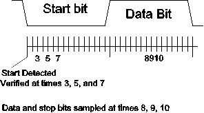

| Previous Section | Next Section | Index | Questions | Search the Text |
The transmitter and receiver of the SCI operate independently, except for the baud rate (bit rate) generator.
The transmitter uses the following bits in the control, status, and data registers for operation after configuration:
| Register | Bit 7 | Bit 6 | Bit 5 | Bit 4 | Bit 3 | Bit 2 | Bit 1 | Bit 0 |
|---|---|---|---|---|---|---|---|---|
| SCnCR2 | TIE | TCIE | SBK | |||||
| SCnSR1 | TDRE | TC | ||||||
| SCnDRH | T8 | 0 | 0 | 0 | 0 | 0 | 0 | |
| SCnDRL | R7T7 | R6T6 | R5T5 | R4T4 | R3T3 | R2T2 | R1T1 | R0T0 |
The transmitter consists of a one byte transmit data register (TDR) which parallel loads a shift register. The serial output of the shift register drives the TD pin. In normal use, SCnSR1 is read, then T8 is loaded with the ninth data bit (if used) then the remaining 8 bits of the TDR are loaded by storing to location SCnDRL. It should be noticed that the DRH/DRL addresses connect to the TDR register only on writes. On reads the addresses are for the receive data register, described under receiver operation.
By first reading SCnSR1 then writing to the TDR, the transmitter is started. This clears the TDRE bit, indicating the TDR register is in use, and the TC bit, indicating that the transmitter is busy. The first thing the transmitter does is transfer the data from the TDR to the shift register. At this point the TDR register is considered to be empty, and the TDRE bit is set. The transmitter sends a start bit followed by shifting out the data bits, then sending a stop bit. When the stop bit has been sent, and if the TDR is still empty, the transmitter enters its idle state and sets the TC (transmit complete) bit. Otherwise it transfers the data from the TDR to the shift register and process repeats.
The SBK bit will cause break frames to be sent when set. The break frames will continue to be sent until SBK is reset to zero.
The microcontroller may store new data into the TDR for transmission as long as the TDRE bit is set. Therefore it must always check the TDRE bit before storing into the TDR. This checking is also a requirement for the transmitter to transmit the data in the TDR. A code sequence which transmits the byte in accumulator A through SCI0 would be:
L1: brclr SC0SR1 #$80 L1 ; loop until TDRE is set
staa SC0DRL ; store data byte into TDR
Note that at 9600 bps it take roughly one millisecond to transmit a character byte. Several thousand instructions may execute during the time it takes to transmit that character. If the program stops or the transmitter is disabled before the full byte is transmitted then the character is lost. For this reason, it is sometimes necessary to have a loop which waits until the transmission is finished. This can be accomplished with a single instruction loop:
L2: brclr SC0SR1 #$40 L2 ; loop until TC is set
The TDRE and TC flags can also cause an interrupt to be requested. The TIE and TCIE control bits are the interrupt enable bits for TDRE and TC respectively. Use of interrupts with the serial ports will be discussed thoroughly in the next section.
The receiver uses the following bits in the control, status, and data registers for operation after configuration:
| Register | Bit 7 | Bit 6 | Bit 5 | Bit 4 | Bit 3 | Bit 2 | Bit 1 | Bit 0 |
|---|---|---|---|---|---|---|---|---|
| SCnCR2 | RIE | ILIE | ||||||
| SCnSR1 | RDRF | IDLE | OR | NF | FE | PF | ||
| SCnSR2 | 0 | 0 | 0 | 0 | 0 | 0 | 0 | RAF |
| SCnDRH | R8 | 0 | 0 | 0 | 0 | 0 | 0 | |
| SCnDRL | R7T7 | R6T6 | R5T5 | R4T4 | R3T3 | R2T2 | R1T1 | R0T0 |
The receiver consists of a shift register which serially shifts in the data from RD then loads the data into a receive data register, RDR. The receive data register can be read by reading the addresses SCnDRH and SCnDRL. In almost all cases, only SCnDRL will be used as only 8 data bits need to be read. The shift register starts after receipt of the start bit. The SCI's clock rate is 16 times the data rate, as shown in the figure, below. When a low input level (space) is detected, the input is also sampled on the third, fifth, and seventh clock. If at least two of the three are low, then the start bit is deemed to be detected, otherwise the process of looking for the start bit repeats. Each data bit, as well as the stop bit, is sampled on the eight, ninth, and tenth SCI clock within the data period. The majority of the bit values determine the value accepted for that data or stop bit.

When the stop bit has been detected, the data is transferred into the RDR and the RDRF (Receive Data Register Full) status bit is set. There are four error bits that might be set as well at that time. PF indicates a parity error which is that the wrong parity bit was read if parity is enabled. FE indicates a framing error, which means the stop bit was read as a 0. This happens if the transmitter and receiver frequencies do not match or the transmitter sends a break. NF is set if there is noise; this means that the sampled data for at least one of the bits was not unanimous.
The microcontroller must read the contents of the RDR (after reading SCnSR1) to reset the RDRF and error bits. If the microcontroller fails to read the RDR before a new byte is shifted in and loaded into the RDR an overrun error occurs and the OR bit is set.
For most reliable operation, the microcontroller should check all the error bits with each byte read. Here is a sample program to read a character byte from SCI0:
L3: brclr SC0SR1 #$20 L3 ; Wait for RDRF to be set
ldaa SC0DRL ; Then read the data
To check for errors, we must examine the error bits before reading the data. Here are two alternative approaches. The first:
L4: brclr SC0SR1 #$20 L4 ; Wait for RDRF to be set
brset SC0SR1 #$1 Parity ; branch to Parity if parity error
brset SC0SR1 #$2 Frame ; branch to Frame if framing error
brset SC0SR1 #$4 Noise ; branch to Noise if noise error
brset SC0SR1 #$8 Ovr ; branch to Ovr if overrun error
ldaa SC0DRL ; Everything OK - read the data
Each error routine must read SC0DRL to clear the error condition and prevent an overrun when the next byte arrives. The second alternative is more efficient when there is no error, and handles the reading of SC0DRL:
L5: ldab SC0SR1 ; load status register into B
bitb #$20 ; RDRF?
beq L5 ; no - try again
ldaa SC0DRL ; Read the data
bitb #$0f ; Any errors?
bne Errors ; yes - go to error routine, which can
; determine error by checking individual
; bits in accumulator B
There is an additional receiver status bit, IDLE, which is set when the receiver is idle for at least one frame time after a character is received. This bit is not set if the wake-up facility is being used. Both RDRF and IDLE can cause interrupt requests when the interrupt enable bits, RIE and ILIE respectively, are set.
Because data can come in at any time, it is important to poll RDRF frequently to avoid losing data (overrun errors). It is generally much easier to use the interrupt system and have an interrupt driven routine handle the receiver. Data is held in an array called a buffer until the program wants it. Design and operation of buffered, interrupt-driven I/O is described in the next section.
Continue with Buffering.
Return to the Index.